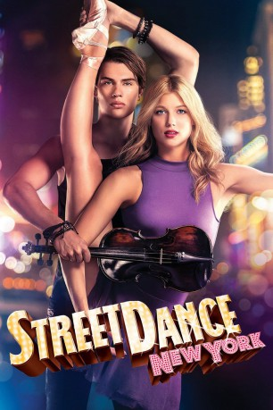

#5029 StreetDance: New York
Alternativ: High Strung
 
 IMDB-Wertung: 6.5 / 10
IMDB-Wertung: 6.5 / 10  Metascore: 0
Metascore: 0 
Ruby ist eine Balletttänzerin, die an der renommiertesten Musik schule New Yorks studiert. Tanzen ist ihre große Leidenschaft. Als sie den britischen Violinisten Johnnie kennenlernt, ahnt sie nicht, wie er ihr Leben verändern wird. Johnnie, der mit seinen StreetDance-Freunden zusammenwohnt, und mit Straßenkonzerten seinen Lebensunterhalt verdient, eröffnet Ruby eine völlig neue, faszinierende Seite der Musik. Doch als Johnnie eines Tages von den Behörden aufgegriffen wird und keine Green Card vorweisen kann, droht sein Traum von einem Leben als Musiker zu zerplatzen. Es gibt nur einen Ausweg: Der Gewinner eines Tanzwettbewerbes an Rubys Schule erhält ein Studentenvisum sowie ein Stipendium. Gemeinsam erarbeiten Ruby, Johnnie und seine StreetDance-Freunde eine Choreografie, in der die Coolness des StreetDance mit der Anmut des Balletts und der klassischen Musik auf der Bühne verschmelzen. Werden sie die Jury überzeugen?
Jahr: 2016
Dauer: 97 Minuten
FSK: 0
Land: USA Studio: PaladinTonspuren: DTS - ,
Untertitel: Deutsch, Englisch,
Auflösung: 1080p (1920x804) Größe: 6481 MB
Genre: Drama, Musik, Liebe
Regisseur: Michael Damian
Drehbuch: Thomas Dean Donnelly
Soundtrack:
Darsteller:
- Keenan Kampa als Ruby
- Nicholas Galitzine als Johnnie
 Sonoya Mizuno als Jazzy
Sonoya Mizuno als Jazzy Jane Seymour als Oksana
Jane Seymour als Oksana- Richard Southgate als Kyle
 Paul Freeman als Kramrovsky
Paul Freeman als Kramrovsky- Marcus Emanuel Mitchell als Hayward
- Maia Morgenstern als Markova
- Anabel Kutay als April
- Comfort Fedoke als Poptart
- Miranda Wilson als Mary
- Olivier Raynal als Neil
- Claudiu Trandafir als Walter
 Andrew Pleavin als Slater
Andrew Pleavin als Slater Tomi May als Detective Mullen
Tomi May als Detective Mullen- Dragos Savulescu als Paolo
- David Lipper als Stage Manager
- Giulia Nahmany als Anastasia
- Nigel Barber als Peterson
- James Longshore als Spuds
- Ivan 'Flipz' Velez als Werk Crew - Deck
- LoDeon als NY Thug , uncredited
- John Silver als Krispy
- Ian Eastwood als Rik
- Corinne Holt als Jett
- Lorenzo Cammarota als Tiptoe
- Tom Russell als Jaxson
- Sonic als Ollie
- Alex Giannini als Vinnie
- Jimmy Townsend als Judge Lawrence
- Oxana Moravec als Helen
- Vlad Radescu als Victor
- Danielle Elise Fischer als Bianca
- Bianca Brad als Female Judge
- Atticus Finch als Simon
- Toto Dumitrescu als Young Guy
- Razvan Gorghinski als Finn
- Ionut Alexandru als Marc
- Massimo Gariga als Art Gallery Client
- Dani Samvis als Art Gallery Client
- Mihai Raducu als Trenchcoat Man
- Dave Scott als Werk Crew - Macki
- Michel 'Meech' Onomo als Werk Crew
- Thomas Bimai als Werk Crew
- Sammi Lee-Jayne als Werk Crew
- Josué Thermilus als Werk Crew
- Din 'Kotoy' Florin als Werk Crew
- Florin Acsinte als Werk Crew
- Alexandru Snopovschi als Werk Crew
- Victor Manea als Werk Crew
Datei: X:\4-Tetralogie(M-Z)\StreetDance\StreetDance New York (2016, FSK0, 1920x804).mkv seit 19.12.2016
Festplatte: HD Collection-3(N-Z)-6(A-Z)
 Es gibt insgesamt 7 Filme in der Gruppe '4-Tetralogie(M-Z)\StreetDance'
Es gibt insgesamt 7 Filme in der Gruppe '4-Tetralogie(M-Z)\StreetDance'